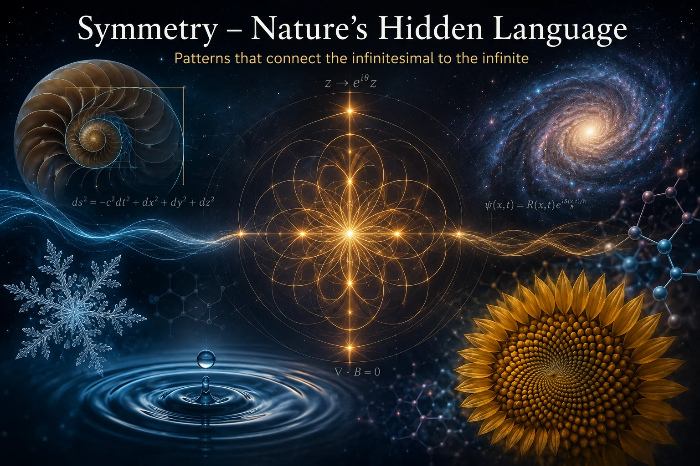
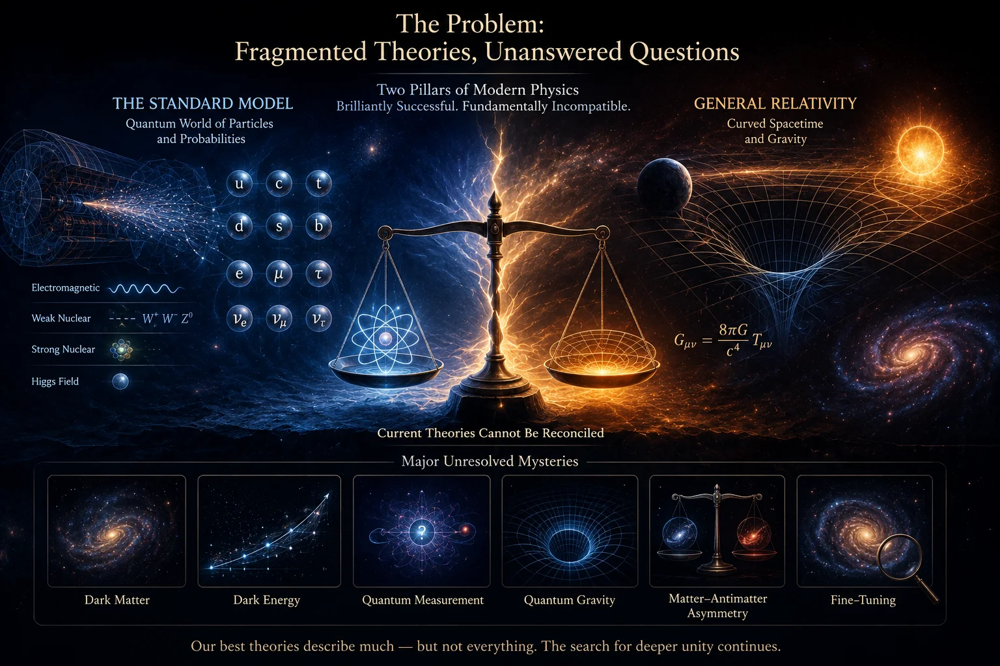
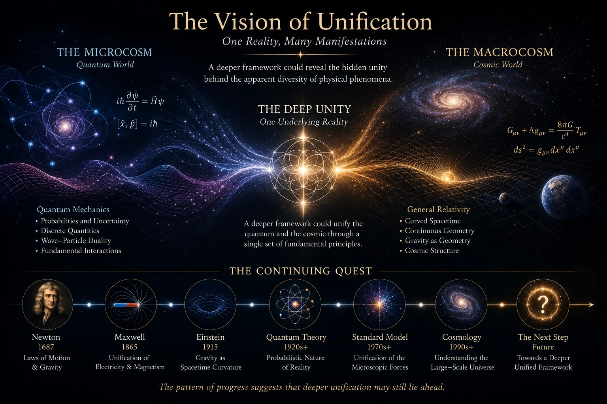
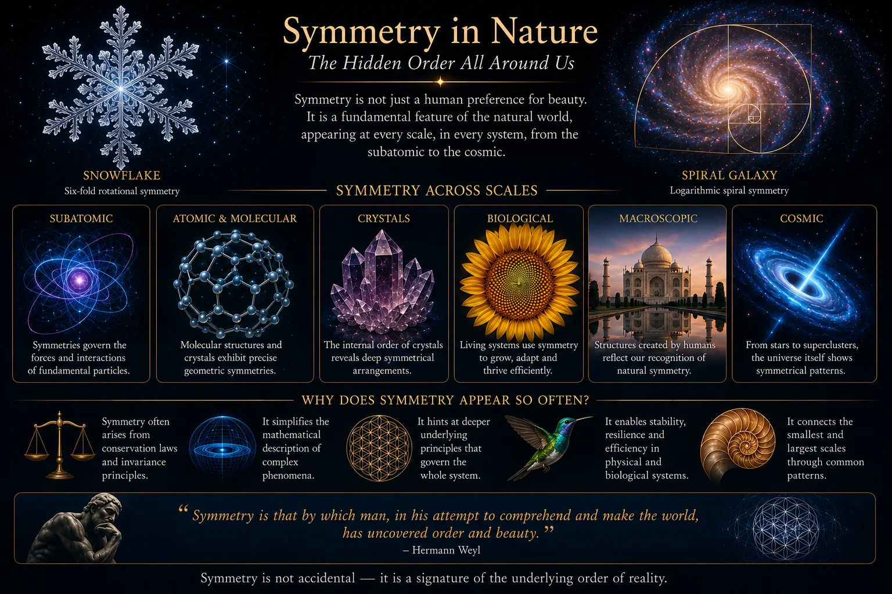
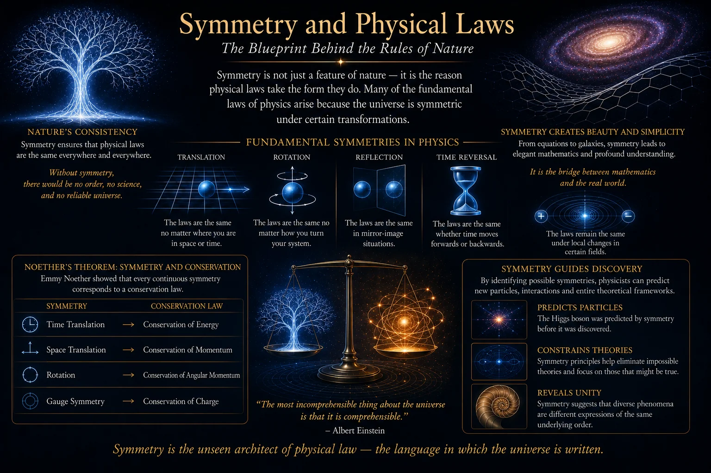
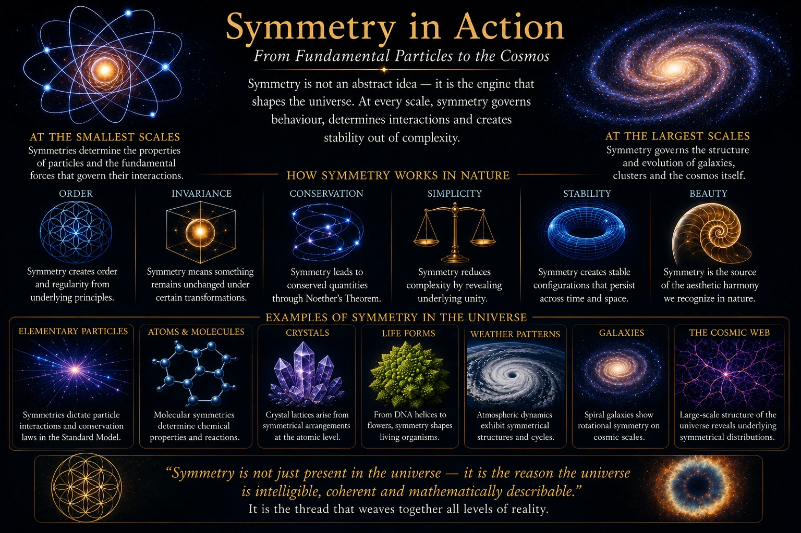
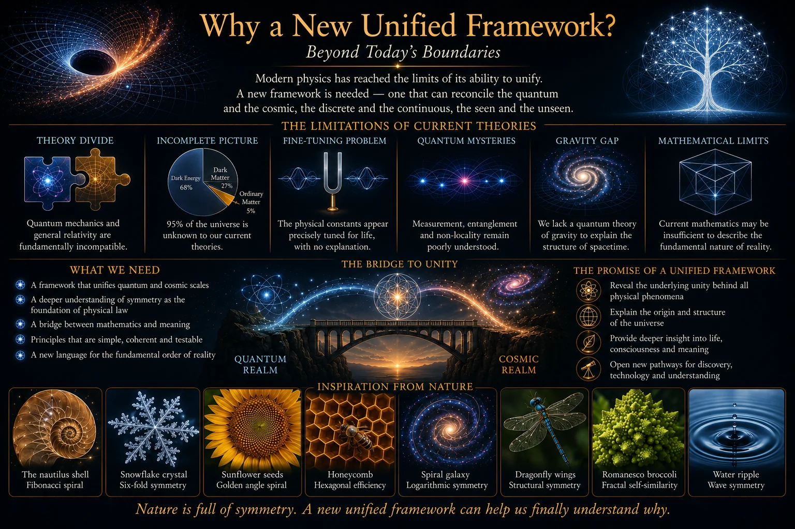

Symmetry - Nature's Hidden Language
Part II of the SYMMETRIA Discussion Series
August 2026

Cover Illustration: Symmetry appears throughout nature, mathematics and physics. From snowflakes and crystals to conservation laws and particle interactions, symmetry provides one of the deepest organising languages through which the universe can be understood.
1. Introduction
The first paper in this discussion series considered why physics may still require a deeper unified framework. Modern science has achieved extraordinary success, yet several major questions remain unresolved. Quantum mechanics and General Relativity remain difficult to reconcile. The Standard Model contains unexplained parameters. Dark matter and dark energy dominate the universe's energy budget but remain poorly understood. The nature of measurement, information and physical law continues to raise profound questions.
This second paper turns to one of the most important clues in the search for deeper understanding: symmetry.
Symmetry is familiar in everyday life. We see it in the wings of butterflies, the structure of snowflakes, the petals of flowers, the spirals of shells and the shapes of galaxies. Human beings often find symmetrical patterns beautiful because they suggest order, balance and coherence. Yet symmetry is far more than an aesthetic feature of nature. In modern physics, symmetry has become one of the most powerful concepts ever discovered.
Many of the deepest laws of physics are linked to symmetry. Conservation of energy is related to symmetry in time. Conservation of momentum is related to symmetry in space. Conservation of angular momentum is related to rotational symmetry. The behaviour of particles and forces is described through mathematical symmetry groups. Even the Standard Model of particle physics is built upon gauge symmetries that govern how fields and particles interact.
This means that symmetry is not simply something nature happens to display. It appears to be part of the underlying grammar of physical law.
The purpose of this paper is to explore why symmetry matters so deeply. We will begin with intuitive examples from nature, then move toward the mathematical meaning of symmetry as invariance under transformation. We will examine how symmetry entered physics, why Emmy Noether's theorem remains one of the most important insights in theoretical science, and why broken symmetry is just as important as perfect symmetry.
The aim is not to provide a technical mathematical treatment. Instead, this paper is written for a general audience. Its goal is to show why symmetry has become central to modern physics and why any future unified framework must take symmetry seriously.
This also prepares the ground for later papers in the SYMMETRIA Discussion Series. SYMMETRIA begins from the idea that symmetry may not merely describe physical systems after they exist, but may help explain how physical structure emerges in the first place. Before that claim can be considered, however, we must first understand why symmetry already plays such a powerful role in established science.
The central question of this paper is therefore simple:
Why does symmetry appear so often and so deeply in the laws of nature?

Figure 1.1: Symmetry appears across many levels of reality, from biological forms and crystalline structures to mathematical laws and physical interactions. Its recurring presence suggests that symmetry may be more than visual balance; it may represent a deep organising principle within nature.
2. Symmetry in Nature
Long before symmetry became a formal concept in mathematics and physics, it was visible in the natural world. Ancient observers saw regularity in the heavens, rhythm in the seasons, repetition in living forms and balance in the shapes of plants, animals and crystals. Nature appeared to generate order without obvious instruction.
One of the simplest examples is bilateral symmetry. Many animals, including human beings, have bodies that are approximately mirrored across a central axis. We have two eyes, two ears, two arms and two legs. This kind of symmetry is not perfect, but it is biologically useful. It supports coordinated movement, balance, sensory orientation and efficient development.
Radial symmetry appears in other organisms. Starfish, jellyfish and many flowers are organised around a central point. Such structures allow interaction with the environment from multiple directions. A flower does not know where a pollinating insect will approach from, so radial organisation can be advantageous.
Crystals provide another striking example. Salt crystals form cubic patterns because of the repeating arrangement of sodium and chloride ions. Snowflakes display sixfold symmetry because of the molecular geometry of water and the conditions under which ice crystals grow. Each snowflake is unique in detail, yet the underlying symmetry reflects deep physical constraints.
Spiral patterns also appear throughout nature. Spiral galaxies, hurricanes, shells, pine cones and sunflower heads all exhibit forms of rotational or logarithmic organisation. These structures arise for different physical and biological reasons, but they reveal how simple growth rules and energy constraints can produce elegant large-scale patterns.
The important point is that symmetry in nature is rarely decorative. It often reflects efficiency, stability or constraint.
A crystal forms symmetrically because atoms settle into arrangements that minimise energy. A soap bubble becomes spherical because a sphere minimises surface area for a given volume. A planet becomes approximately round because gravity pulls matter inward from all directions. A biological body plan may become symmetrical because symmetry supports movement, reproduction or environmental interaction.
In other words, symmetry often appears when a system is governed by underlying rules that favour balance.
However, nature is not perfectly symmetrical. Indeed, many of the most interesting structures arise from broken, partial or approximate symmetry. A tree may grow branches in repeating patterns, but no tree is perfectly symmetrical. A human face may be broadly symmetrical, but its small asymmetries make it recognisably individual. A galaxy may exhibit spiral structure, but its arms are shaped by local gravitational history.
This tension between symmetry and asymmetry is crucial.
Perfect symmetry can sometimes be too simple. A perfectly uniform universe would contain no stars, planets or observers. Structure requires differences. The universe as we know it depends not only on symmetry but on symmetry breaking: the emergence of distinctions from an initially more balanced state.
This is why symmetry in nature should not be understood merely as sameness. It is better understood as organised relationship. Symmetry describes what remains stable when something changes. Broken symmetry describes how structure appears when perfect balance gives way to differentiation.
A snowflake is symmetrical, but it grows through local interactions with changing temperature and humidity. A living body is symmetrical, but it develops through asymmetric chemical signals and environmental influences. A galaxy has large-scale rotational order, but its details are shaped by collisions, dark matter distribution and gravitational perturbations.
Nature therefore teaches an important lesson. Symmetry is not the absence of complexity. It is often the foundation upon which complexity becomes possible.
This insight carries directly into physics. The laws of nature often possess symmetries even when the objects governed by those laws do not. A thrown ball follows the same gravitational law whether it is thrown in London or Liverpool. A laboratory experiment should produce the same result today as it did yesterday, assuming the same conditions. A rotating system may preserve angular momentum even while its visible shape changes.
These observations point toward a deeper idea: the most important symmetries in physics are not always visible shapes. They are invariances - things that remain unchanged under transformation.

Figure 2.1: Natural symmetry appears in snowflakes, crystals, biological forms, shells, bubbles and galaxies. These patterns often arise from stability, efficiency and constraint rather than decoration alone.
3. Symmetry in Mathematics and Physics
In everyday language, symmetry often means visual balance. A shape is symmetrical if one side mirrors the other, or if it looks the same after being rotated. Mathematics generalises this idea into something much more powerful.
In mathematics, symmetry is closely related to transformation. A system possesses a symmetry if some transformation can be applied to it while leaving an important feature unchanged. The transformation might be a reflection, rotation, translation, scaling, phase shift or more abstract operation. What matters is that something remains invariant.
A square has rotational symmetry because it looks the same after being rotated by ninety degrees. A circle has continuous rotational symmetry because it looks the same after being rotated by any angle. A repeating pattern has translational symmetry because shifting it by a certain distance leaves the pattern unchanged.
This idea of invariance is the key.
Physics uses symmetry in a similar but deeper way. A physical law is symmetrical if it remains valid under certain transformations. For example, the laws of physics do not appear to depend on where an experiment is performed. A well-controlled experiment should produce the same result in Manchester, Tokyo or on a spacecraft moving through deep space. This is a symmetry under translation in space.
Similarly, the laws of physics do not appear to depend on when an experiment is performed. A properly controlled experiment should obey the same physical laws today as it did yesterday. This is a symmetry under translation in time.
The laws of physics also appear to be independent of orientation. If a laboratory is rotated, the fundamental laws should not change. This is rotational symmetry.
These examples may sound obvious, but they are extraordinarily profound. They imply that the universe is governed not by arbitrary local rules, but by laws possessing stable structure across space, time and orientation.
Modern physics expresses many of these principles through symmetry groups. A group is a mathematical structure describing a set of transformations that can be combined consistently. Rotations form groups. Reflections form groups. Gauge transformations form groups. Particle physics relies heavily on such structures because they provide precise ways of describing how fields and particles behave.
The Standard Model of particle physics is based on gauge symmetry groups usually written as SU(3) x SU(2) x U(1). These symbols describe mathematical structures associated with the strong nuclear force, weak nuclear force and electromagnetism. Although the notation is technical, the underlying idea is that particle interactions are governed by deep transformation rules.
Gauge symmetry is especially important. In simple terms, a gauge symmetry means that certain mathematical descriptions can be changed locally without changing the physical reality they describe. This may sound abstract, but it has enormous consequences. Requiring gauge symmetry leads naturally to the existence of force-carrying fields. In this sense, symmetry does not merely describe forces; it helps generate the mathematical necessity for them.
Electromagnetism provides a useful example. The equations describing charged particles and electromagnetic fields possess a U(1) gauge symmetry. This symmetry is closely connected to the conservation of electric charge and the existence of the photon as the force carrier of electromagnetism.
The weak and strong nuclear forces involve more complex symmetries. The weak force is associated with SU(2), while the strong force is associated with SU(3). These symmetries govern interactions between particles such as quarks, leptons, W and Z bosons, gluons and other components of the Standard Model.
This reveals a remarkable fact. At the deepest levels currently understood by physics, particles are not simply tiny objects bumping into one another. They are excitations of fields governed by symmetry principles.
Symmetry also plays a central role in relativity. Einstein's Special Relativity is based on the principle that the laws of physics are the same for all observers moving at constant velocity relative to one another, and that the speed of light is invariant. This leads to Lorentz symmetry, which links space and time into spacetime.
General Relativity extends the idea further. Gravity is described through the geometry of spacetime, and the theory is built around general covariance: the idea that the laws of physics should retain their form regardless of the coordinate system used. Again, the language of symmetry and invariance lies close to the heart of the theory.
The lesson is clear. As physics has advanced, symmetry has become less like an optional feature and more like a foundation. The most successful theories in physics are not merely equations that happen to work. They are mathematical structures constrained and shaped by symmetry.
This raises an important question. Are symmetries simply useful tools created by physicists, or do they reflect something real about the organisation of nature itself?
SYMMETRIA takes that question seriously. Before reaching that perspective, however, we must examine one of the most profound discoveries linking symmetry directly to physical law: Noether's theorem.

Figure 3.1: In mathematics and physics, symmetry means invariance under transformation. A law or structure possesses symmetry when something essential remains unchanged after reflection, rotation, translation or a more abstract transformation.
4. Noether's Theorem and Conservation Laws
One of the greatest insights in the history of physics came from the mathematician Emmy Noether. In 1918, she proved a theorem that revealed a deep relationship between symmetry and conservation laws. This theorem is now regarded as one of the most important results in theoretical physics.
The idea can be expressed simply:
For every continuous symmetry of a physical system, there is a corresponding conservation law.
This statement is both elegant and powerful.
Before Noether, conservation laws were often treated as separate facts about nature. Energy is conserved. Momentum is conserved. Angular momentum is conserved. Electric charge is conserved. These principles were known to be important, but their deeper origin was less clear.
Noether's theorem showed that conservation laws are not isolated coincidences. They arise from symmetries.
If the laws of physics do not change over time, energy is conserved. This is time-translation symmetry. If an experiment obeys the same laws today as it did yesterday, then the system possesses a kind of temporal invariance, and energy conservation follows from that invariance.
If the laws of physics do not change from one location to another, momentum is conserved. This is space-translation symmetry. A system does not care whether it is located here or several metres away, assuming the same conditions. That spatial invariance corresponds to conservation of momentum.
If the laws of physics do not change when a system is rotated, angular momentum is conserved. This is rotational symmetry. A spinning object preserves angular momentum because the underlying laws are invariant under changes of orientation.
These relationships are astonishing because they reveal conservation laws as expressions of deeper structure. Nature conserves certain quantities because the underlying laws possess corresponding symmetries.
This transforms how we understand physical law.
Energy conservation is not merely an empirical rule discovered by observing many systems. It is linked to the fact that the laws of physics remain stable through time. Momentum conservation is not merely a convenient principle for mechanics. It is linked to the uniformity of space. Angular momentum conservation is not merely about spinning objects. It reflects rotational invariance.
Noether's theorem therefore suggests that symmetry is not a superficial property of nature. It sits beneath some of the most fundamental principles in physics.
The theorem also provides a way to think about why conservation laws are so reliable. If a conservation law fails, one must ask whether the corresponding symmetry has been broken or whether the system has been described incompletely. This makes symmetry a diagnostic tool as well as a theoretical principle.
In modern physics, Noether's theorem plays a central role in field theory. Symmetries of the action - the mathematical quantity from which equations of motion can be derived - correspond to conserved currents and charges. This idea underpins much of contemporary theoretical physics, including particle physics and gauge theory.
The connection between gauge symmetry and charge conservation is especially important. Electric charge conservation is linked to U(1) gauge symmetry. Other conserved quantities arise from other symmetry structures. In the Standard Model, the interactions of particles are deeply connected to the symmetry groups that define the theory.
Noether's theorem also helps explain why physicists are so interested in discovering new symmetries. A new symmetry may imply a new conservation principle, a new constraint, or a deeper relationship between known phenomena. Conversely, a broken symmetry may explain why certain behaviours differ across scales or conditions.
This is one reason unification theories often search for larger or deeper symmetry groups. If apparently separate forces emerge from a more unified symmetry at high energies, then the differences we observe at lower energies may result from symmetry breaking. This idea has guided much of modern theoretical physics, including electroweak unification and attempts at Grand Unified Theories.
For a general audience, the essential point is this:
Symmetry explains why certain things remain stable while the universe changes.
The universe is dynamic. Particles move, stars form, galaxies collide, organisms evolve and fields fluctuate. Yet amid this change, certain quantities remain conserved. Noether's theorem tells us that these conserved quantities are rooted in invariance.
This makes symmetry one of the strongest clues that nature possesses deep organisation. It is not merely that physicists like symmetrical equations. Symmetry appears to be woven directly into the logic by which the universe preserves order through change.
This insight leads naturally to the next question. If symmetry is so important, what happens when symmetry is broken?
The answer is that broken symmetry may be one of the main ways structure appears.

Figure 4.1: Noether's theorem links continuous symmetries to conservation laws. Time symmetry corresponds to conservation of energy, spatial symmetry to conservation of momentum, and rotational symmetry to conservation of angular momentum.
5. Broken Symmetry and Emergence
Perfect symmetry is powerful, but a universe of perfect symmetry would be empty of structure. If everything were completely uniform, there would be no stars, planets, atoms, chemistry or life. Structure requires distinction. Difference must emerge from balance.
This is why broken symmetry is one of the most important ideas in modern physics.
Symmetry breaking occurs when the underlying laws of a system possess a symmetry, but the actual state of the system does not display that symmetry fully. The rules remain symmetrical, but the outcome chooses a particular direction, configuration or state.
A simple analogy is a pencil balanced perfectly on its tip. In principle, all falling directions are equally possible. The situation is rotationally symmetrical. But once the pencil falls, it lands in one particular direction. The symmetry of the situation has been broken by the actual outcome.
Another example is water freezing into ice. Liquid water is relatively uniform, with molecules moving freely. As it freezes, molecules settle into a crystalline structure. The resulting ice has a specific arrangement. The symmetry of the liquid state gives way to a more structured but less uniform state.
Magnets provide a particularly important example. Above a certain temperature, the microscopic magnetic orientations inside a material point randomly in many directions. The system has no overall magnetisation. Below a critical temperature, those orientations align, and the material becomes magnetised. A direction has been selected. Symmetry has been broken.
In physics, such processes are not merely curiosities. They help explain major features of the universe.
The electroweak theory provides one of the most important examples. At very high energies, electromagnetism and the weak nuclear force are understood as aspects of a unified electroweak interaction. At lower energies, symmetry breaking separates them into the distinct forces we observe. The Higgs mechanism is part of this process, providing a way for particles such as the W and Z bosons to acquire mass while the photon remains massless.
This means that the world we observe may not reflect the deepest symmetry directly. It may reflect a broken-symmetry state.
The early universe is thought to have undergone several symmetry-breaking transitions as it expanded and cooled. At extremely high energies, forces that now appear distinct may have been unified. As the universe cooled, symmetries broke, fields settled into particular states, and the familiar structure of matter and forces emerged.
This is a profound idea. The complexity of the universe may have arisen not because symmetry was absent, but because symmetry changed form.
Broken symmetry also helps explain why nature contains both order and diversity. Perfect symmetry gives unity. Broken symmetry gives structure. The universe appears to require both.
In biology, a fertilised egg begins as a relatively simple cell, yet development produces a highly structured organism with different tissues, organs and axes. This is not the same kind of symmetry breaking found in particle physics, but the analogy is useful. Complex form emerges through differentiation governed by underlying constraints.
In cosmology, tiny fluctuations in the early universe grew into galaxies and clusters through gravitational amplification. A perfectly smooth universe would not have produced structure. Slight asymmetries became the seeds of cosmic complexity.
In materials science, phase transitions produce new properties when systems reorganise. Superconductivity, crystallisation, magnetism and many other phenomena depend upon changes in symmetry and order.
This makes broken symmetry central to emergence.
Emergence occurs when higher-level behaviour arises from lower-level interactions. Broken symmetry provides one route by which new levels of organisation appear. A system begins with general possibilities, then settles into a specific configuration that supports new behaviour.
This has important implications for unification. A unified framework does not necessarily mean that all forces should look identical under ordinary conditions. Instead, it may mean that the differences between forces arise because an original symmetry has been broken into distinct expressions.
This is one reason physicists continue searching for deeper symmetries. The goal is not to erase difference, but to explain difference as structured emergence from a deeper order.
From the SYMMETRIA perspective, this is especially important. If physical reality emerges through layers of symmetry, constraint and breaking, then the visible universe may represent the stabilised outcome of deeper organisational processes. Matter, force and spacetime may be not the starting point, but the result.
Whether this idea proves scientifically useful remains unknown. What is clear, however, is that modern physics already demonstrates the enormous importance of both symmetry and broken symmetry.
The universe is not merely symmetrical.
It is structured by the relationship between symmetry and its breaking.

Figure 5.1: Broken symmetry allows structure to emerge from initially balanced conditions. In physics, phase transitions, particle masses and force separation can all be understood through symmetry breaking processes.
6. The SYMMETRIA Perspective
The preceding sections have shown that symmetry already plays a central role in modern physics. It appears in natural forms, mathematical transformations, conservation laws, gauge theories, relativity and symmetry-breaking processes. This provides the conceptual foundation for understanding why SYMMETRIA places symmetry at the centre of its exploratory framework.
SYMMETRIA begins from a simple but ambitious question:
What if symmetry is not merely a property of physical law, but one of the deeper principles from which physical law emerges?
This does not mean that SYMMETRIA rejects current physics. On the contrary, any useful future framework must reproduce the successful predictions of existing theories. Quantum mechanics, the Standard Model and General Relativity have earned their status through extraordinary experimental success. A serious exploratory framework must respect that achievement.
However, the unresolved problems discussed in Paper 1 suggest that current theories may not represent the final layer of explanation. Symmetry provides one possible route toward a deeper perspective because it already lies beneath so many established results.
The SYMMETRIA perspective treats symmetry as an organising principle rather than merely a descriptive tool. In this view, particles, forces, fields and spacetime may be stable expressions of deeper symmetry relationships. Observable reality may emerge from transformations, constraints and symmetry-breaking processes operating at more fundamental levels.
One way to understand this is through analogy with language.
Words and sentences appear diverse, but they are governed by grammar. The grammar is not usually visible in the same way the words are visible, yet it shapes what can be meaningfully expressed. In a similar way, symmetry may function as part of nature's hidden grammar. Physical phenomena may be the visible sentences; symmetry may be part of the underlying syntax.
This is why the title of this paper describes symmetry as nature's hidden language.
The language is hidden because we do not directly observe symmetry in the abstract. We observe its consequences: conservation laws, particle interactions, stable structures, phase transitions and mathematical invariance. Symmetry reveals itself through the way nature behaves consistently across transformation.
SYMMETRIA extends this idea by asking whether deeper layers of symmetry could connect currently separate domains of physics. Rather than beginning with four independent forces and attempting to join them later, the framework explores whether those forces may arise as different expressions of a more fundamental organisational structure.
This approach naturally leads to several research questions.
Can known conservation laws be interpreted as expressions of deeper nilpotent balance?
Can the Standard Model's gauge symmetries be embedded within a broader symmetry-first architecture?
Can mass, inertia, charge and time be described as emergent consequences of symmetry relations rather than independent primitives?
Can computational modelling reveal whether layered symmetry systems generate behaviours resembling known physical phenomena?
Can any of these ideas eventually lead to testable predictions?
These questions remain open. SYMMETRIA is not yet a validated theory, and it should not be presented as though it has solved the major problems of physics. At this stage, it is best understood as an exploratory programme: a structured attempt to investigate whether symmetry, nilpotency, information, constraint and emergence can be developed into a useful framework for future research.
That distinction matters. Speculative ideas can be valuable if they are pursued responsibly, but they become dangerous when presented as established fact before evidence supports them. The proper role of SYMMETRIA at this stage is not to claim certainty, but to generate disciplined questions and possible research pathways.
The immediate next step in the discussion series is therefore to examine nilpotency. If symmetry is one major clue, nilpotent structure may provide another. Nilpotent mathematics introduces the idea of self-cancelling balance, where opposing components combine to produce a zero-square structure. This concept has potential relevance to conservation, particle structure and the deeper organisation of physical systems.
Paper 3 will therefore turn to the nilpotent foundation and explore why such structures may be important for the future development of SYMMETRIA.
Before moving on, however, we can summarise the role symmetry plays in this broader journey.
Table 6.1 - Symmetry Concepts and Their Role in Physics
| Symmetry Concept | Meaning | Physical Importance |
|---|---|---|
| Spatial Translation | Laws remain the same from place to place | Linked to conservation of momentum |
| Time Translation | Laws remain the same over time | Linked to conservation of energy |
| Rotational Symmetry | Laws remain the same under rotation | Linked to conservation of angular momentum |
| Gauge Symmetry | Certain field transformations leave physics unchanged | Underpins particle interactions and charge conservation |
| Lorentz Symmetry | Laws remain consistent for inertial observers | Foundation of Special Relativity |
| Broken Symmetry | Symmetric laws produce asymmetric outcomes | Explains emergence, phase transitions and particle masses |
| Hidden Symmetry | Deeper symmetry not directly visible in ordinary conditions | Possible route toward unification and new theoretical frameworks |

Figure 6.1: The SYMMETRIA perspective explores whether particles, forces, spacetime and physical laws may emerge from deeper symmetry relationships. In this view, symmetry is not merely a feature of nature but a possible organising language beneath observable reality.